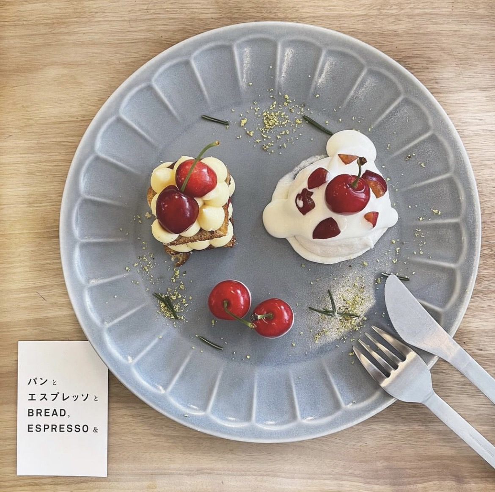
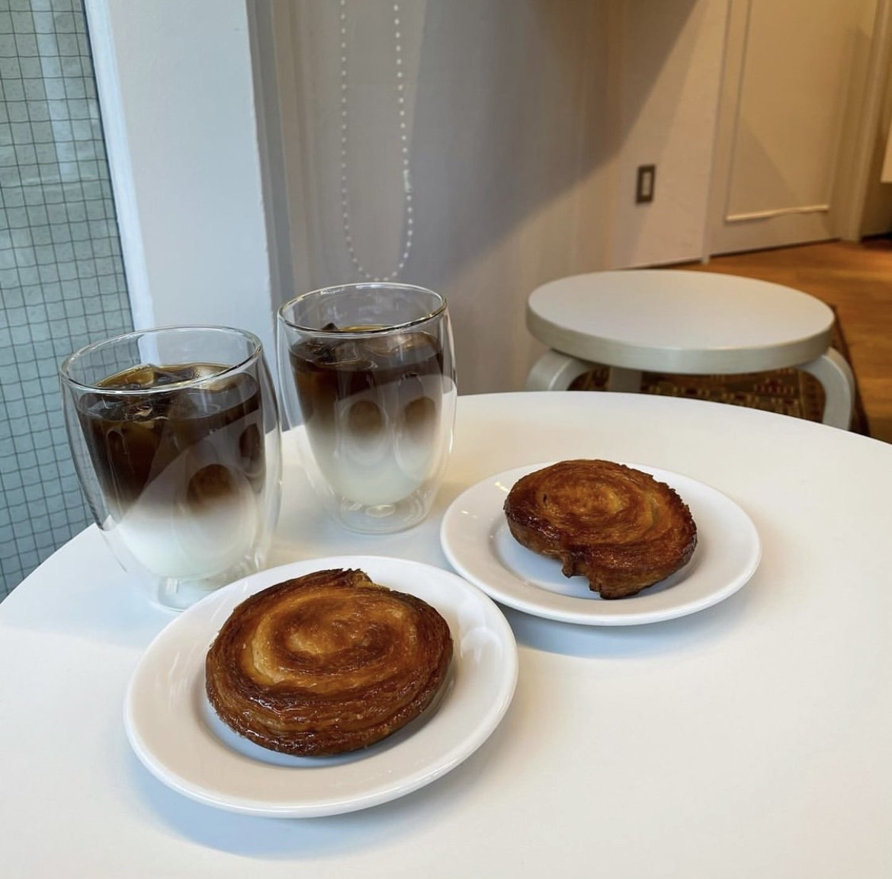
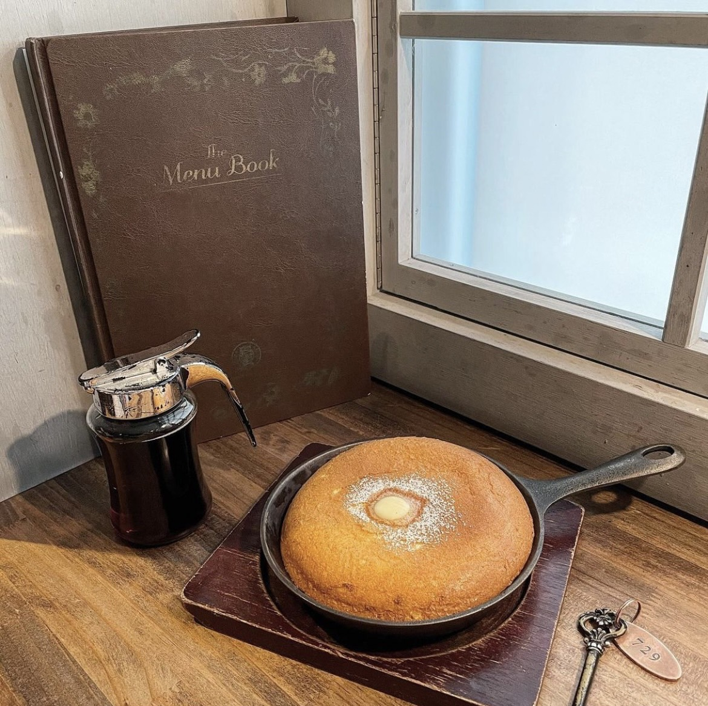
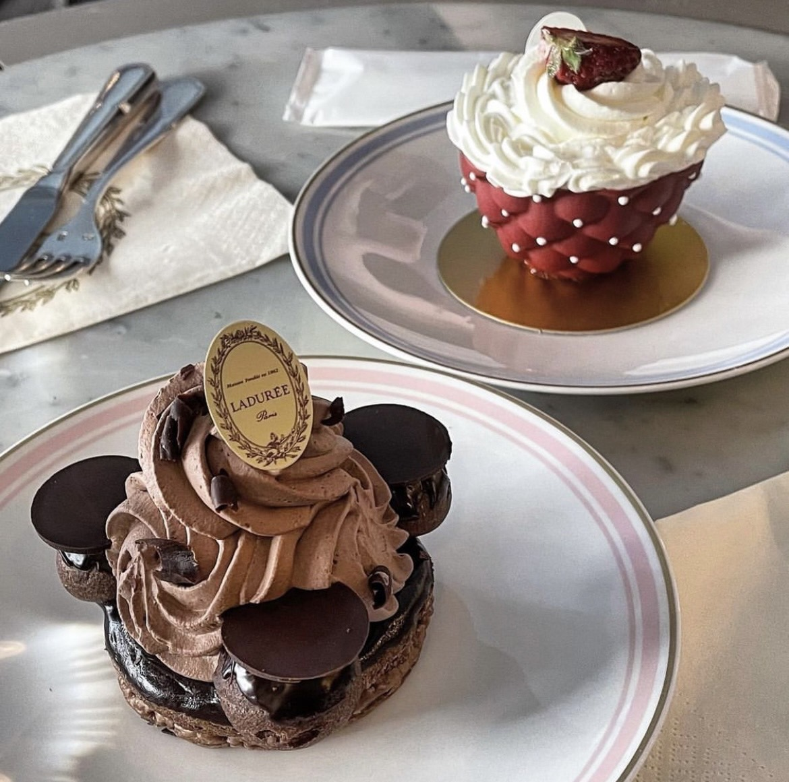
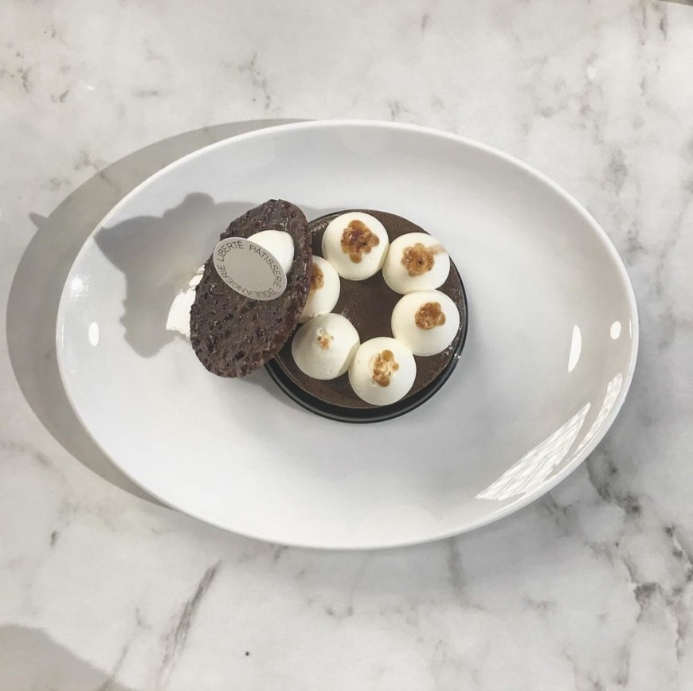

BREAD, Espresso & パンとエスプレッソと【表参道】
| BREAD, Espresso & パンとエスプレッソと | |
|---|---|
| 所在地 | 東京都渋谷区神宮前3-4-9 |
| 営業時間 | 8:00～21:00 |
| 定休日 | 年中無休 |
| アクセス | 表参道駅A2出口より徒歩5分 |
| 電話番号 | 03-5410-2040 |
| 外部リンク | パンとエスプレッソと ホームページ |
Snow & Coffee Table【表参道】
| Snow & Coffee Table | |
|---|---|
| 所在地 | 東京都渋谷区神宮前4-18-6 |
| 営業時間 | 11:00～18:00 |
| 定休日 | 火曜日、第2・4月曜日、不定休 |
| アクセス | 表参道駅より徒歩5分 |
| 電話番号 | なし |
| 外部リンク | Snow & Coffee Table ホームページ |
梟書茶房 Esola池袋店【池袋】
| 梟書茶房 Esola池袋店 | |
|---|---|
| 所在地 | 東京都豊島区西池袋1-12-1 Esola池袋4F |
| 営業時間 | 10:30～22:00 |
| 定休日 | 年中無休 |
| アクセス | 池袋駅より駅徒歩1分 |
| 電話番号 | 03-3971-1020 |
| 外部リンク | 梟書茶房 ホームページ |
boutique / Salon de the LADUREE 銀座店【銀座】
| boutique / Salon de the LADUREE 銀座店 | |
|---|---|
| 所在地 | 東京都中央区銀座4-6-16 銀座三越2F |
| 営業時間 | 10:00～22:00 |
| 定休日 | 年中無休 |
| アクセス | 銀座駅より徒歩1分 |
| 電話番号 | 03-3563-2120 |
| 外部リンク | ラデュレ銀座店 ホームページ |
Liberte Patisserie Boulangerie【吉祥寺】
| Liberte Patisserie Boulangerie | |
|---|---|
| 所在地 | 東京都武蔵野市吉祥寺本町2-14-3 |
| 営業時間 | 平日10:00～19:00, 休日9:00～19:00 |
| 定休日 | 年中無休 |
| アクセス | 吉祥寺駅より徒歩6分 |
| 電話番号 | 0422-27-6593 |
| 外部リンク | Liberte Patisserie Boulangerie ホームページ |
お問い合わせ
アンケート
この記事は参考になりましたか？
あなたが選んだ評価がここに出ます